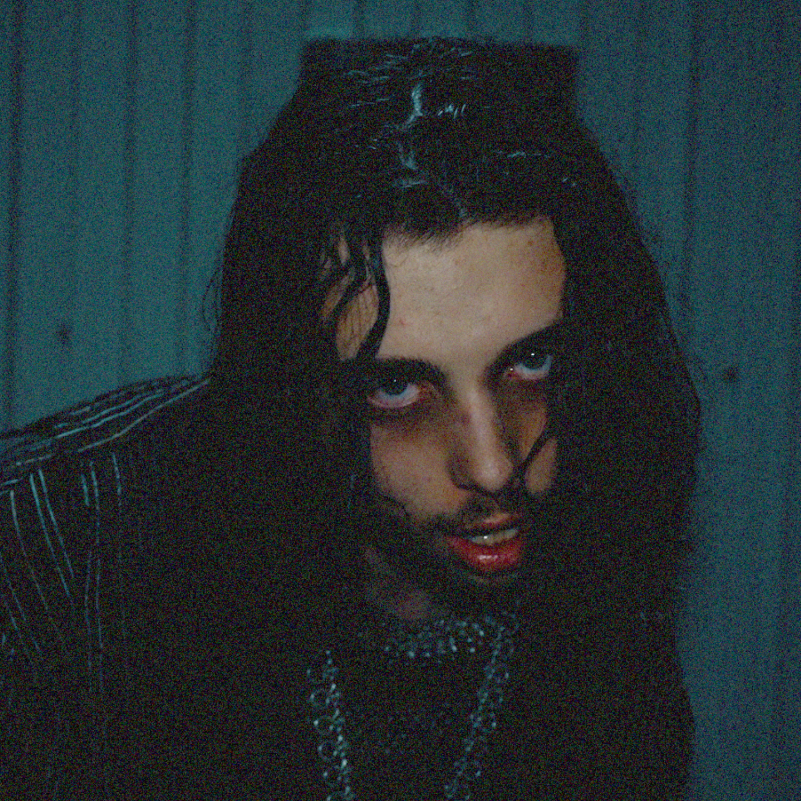

February 2026
WHISPER
Whisper is my most recent song. This piece continues to explore my raw and atmospheric, bass centered sound, while also tapping into my metal influences. Everyone has something buried within them, everyone wants to let go. There's no Whisper we won't trust.